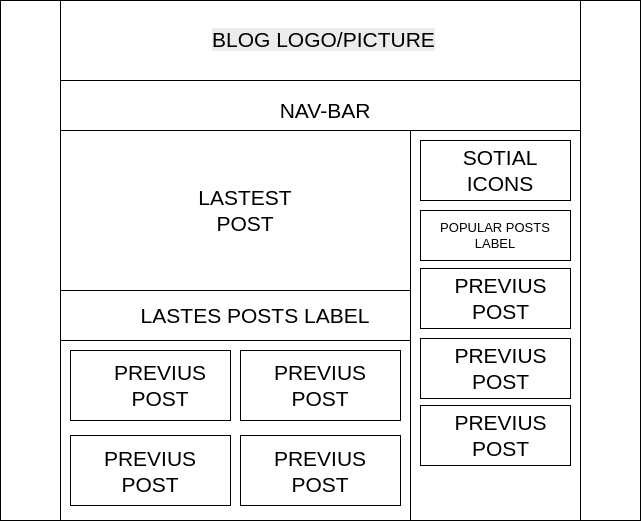
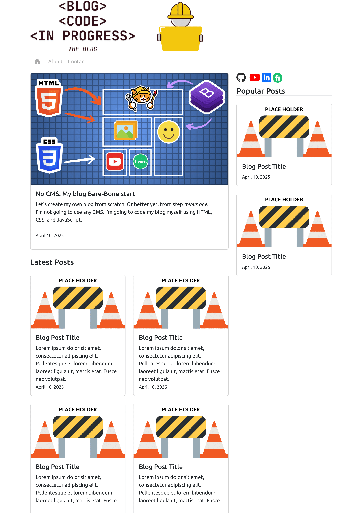

Let’s create my own blog from scratch. Or better yet, from step minus one.
I’m not going to use any CMS. I’m going to code my blog myself using HTML, CSS, and JavaScript.
Yerrrr—that’s gonna be fun.
I’m going to host my blog on Neocities. I’m not a hipster or some old-school tech romantic, but I like the simplicity of it. The free tier only gives me limited space for static files, which means I’ll only add tools and resources when I actually decide to use them. One step at a time.
The first thing is to decide on a theme.
Honestly, I’m not super passionate about writing on any specific topic. This blog will probably become a mix of different types of posts. Still, I want to have at least one main theme.
I’ve decided: “A blog about its own development.”
That way, I not only get to build the blog itself, but the development itself becomes content.
I kill two birds with one codebase.
Let’s address the AI elephant in the room.
I’m not paying for any premium models like ChatGPT-4 or similar services. Any help from AI will come from free-tier tools. Also, I like to understand what I’m doing—so I’ll only ask AI to generate parts of the code I already understand, rather than asking it to do whole tasks. And yes, I’ll test everything.
Don’t blindly trust AI—or anything, really.
After poking around the web for inspiration, I came up with the following layout:
To implement it, I’ll use Bootstrap—because it’s simple and I know the basics. Full disclosure: I’m not great with CSS.
This next images shows in general how I’m using Bootstrap to build the layout:
Here’s what my blog looks like right now:
If it doesn’t look like that when you’re reading this, that means I’m making progress! I’ll be using Git and GitHub to version-control everything, so the blog’s past won’t be lost.
There’s still a lot to do:
And that’s just the normal stuff.
I’m also planning to add a bunch of totally unnecessary things that a blog definitely doesn’t need—just for fun (and for content, of course):
The sky’s the limit.
Maybe the subtitle of this blog should be:
“A Place for Over-Engineering.”
What do you think?